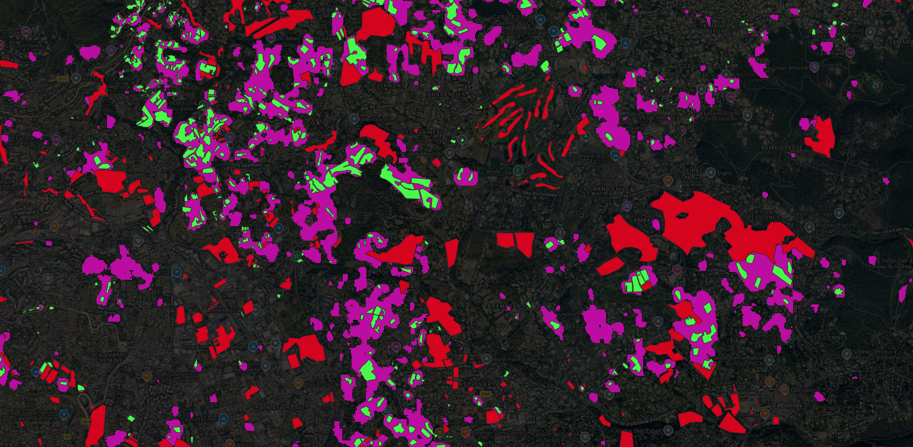
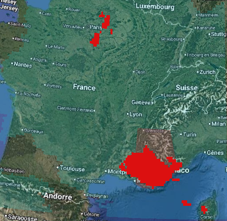
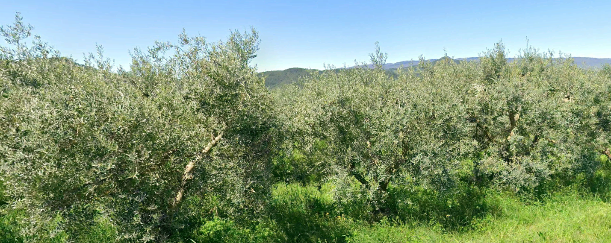
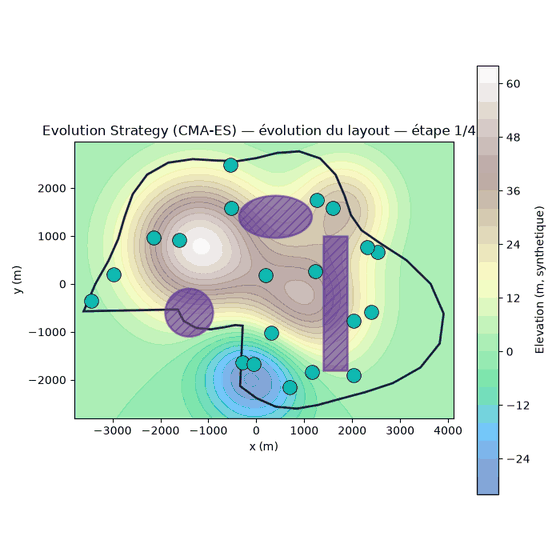
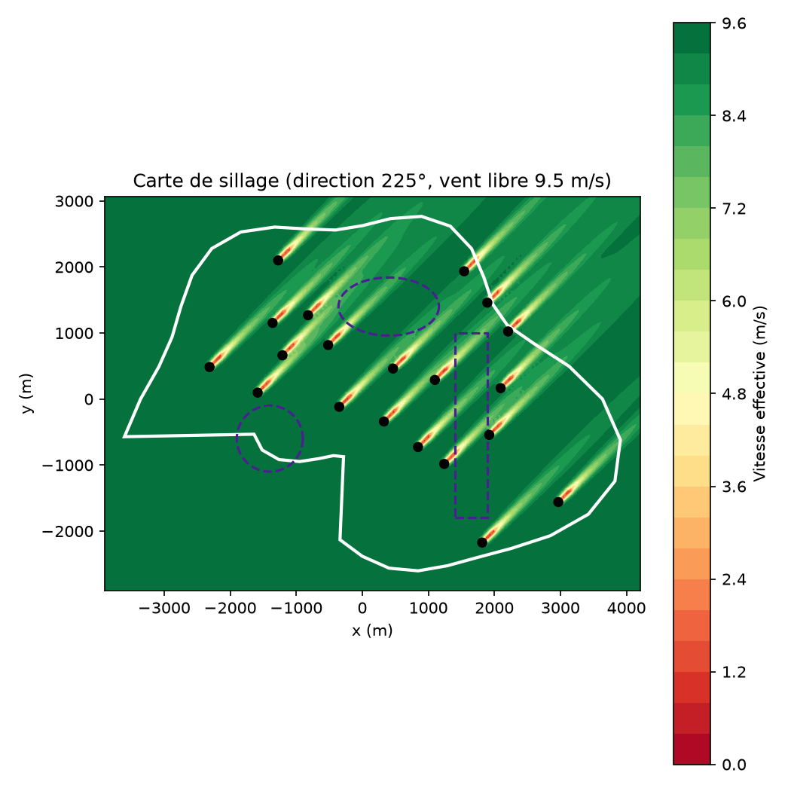
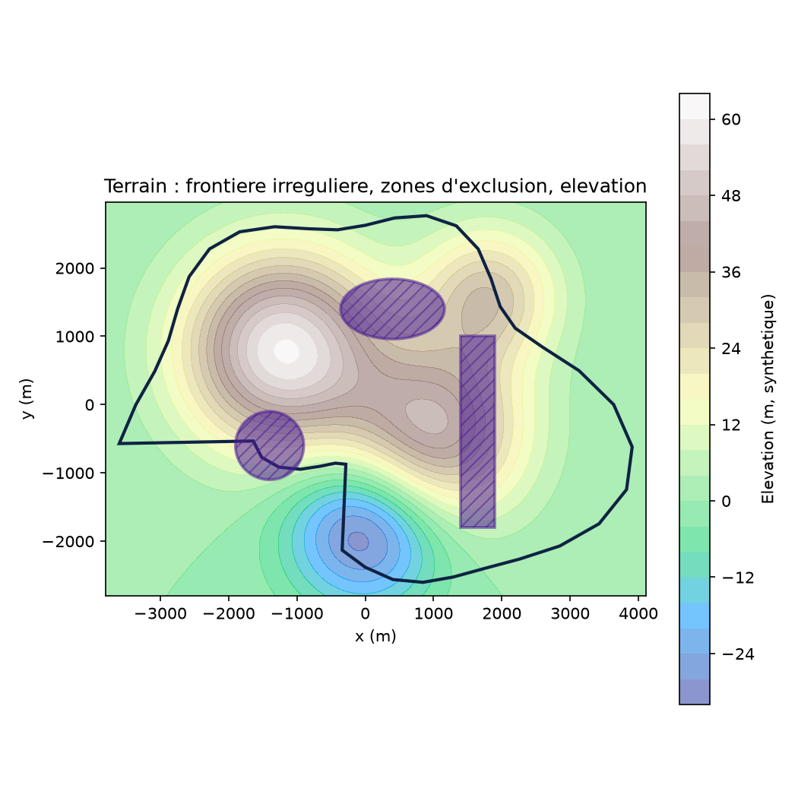
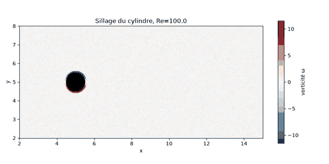
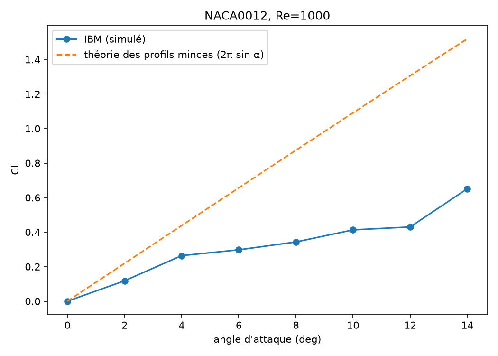
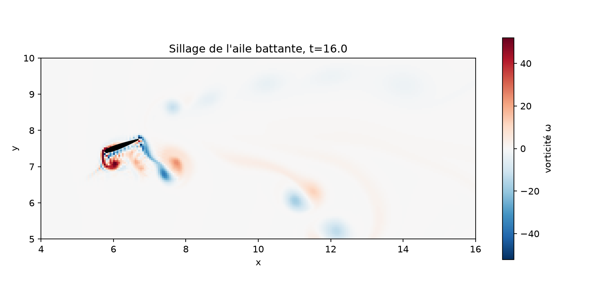

Profil
À propos
Ingénieur en mathématiques appliquées, diplômé du Master 2 INUM de Polytech Nice Sophia, spécialisé en calcul scientifique, modélisation & simulation numérique et intelligence artificielle. Je combine rigueur mathématique et implémentation logicielle en Python et C++.
Mon stage chez ACRI-ST (Sophia-Antipolis) m'a permis d'appliquer le deep learning à la détection et segmentation d'oliviers sur images satellite Sentinel-2 avec l'architecture UTAE, ainsi qu'à une étude de modélisation de niche écologique (SDM) pour l'olivier Olea europaea dans les Alpes-Maritimes.
Je recherche un CDI d'ingénieur en France (Rennes de préférence) sur des problématiques de simulation numérique, IA appliquée ou traitement de données scientifiques.
Savoir-faire
Compétences
Parcours
Expériences
Stage 6 mois
Application du deep learning à la détection et segmentation d'oliviers (Olea europaea) sur des séries temporelles d'images satellite Sentinel-2, avec l'architecture UTAE (U-Net + Temporal Attention Encoder). Étude complémentaire de modélisation de niche écologique (SDM) pour caractériser les zones favorables à l'olivier dans les Alpes-Maritimes, en combinant variables bioclimatiques WorldClim et algorithmes MaxEnt, Random Forest, BRT, GLM, GAM. Évaluation des modèles par AUC, TSS et validation croisée spatiale.



France
Cours particuliers de mathématiques pour des élèves de 5ème à 1ère. Suivi personnalisé, préparation aux examens et au baccalauréat.
Togo
Cours de mathématiques en 2nde L, 1ère S et Tle L. Conception des cours, devoirs, évaluations dans un établissement d'excellence.
Réalisations
Projets académiques
PFE
Application de réseaux de neurones graphiques (GNN) pour la prédiction de contraintes mécaniques sur des maillages d'éléments finis. Le modèle apprend à prédire les champs de déformation à partir de la topologie du maillage, ouvrant la voie à des simulations rapides en substitution des solveurs classiques FEM.
Placement de 20 éoliennes sur un terrain non convexe avec zones d'exclusion et relief non uniforme, par optimisation en deux étapes (géométrie puis rose des vents réelle). Modèle de sillage gaussien (Bastankhah & Porté-Agel), rose de vent par distribution de Weibull, et comparaison de deux familles de méthodes d'optimisation : gradient (L-BFGS-B) et CMA-ES.



Implémentation from scratch d'un modèle de langage basé sur l'architecture Transformer, pour comprendre les mécanismes d'attention et l'entraînement des grands modèles de langage.
Solveur Navier-Stokes 2D (grille MAC, méthode de projection de Chorin) couplé à un forçage direct implicite pour simuler un objet immergé sans le mailler. Validé sur l'allée tourbillonnaire de von Kármán derrière un cylindre (nombre de Strouhal conforme à la littérature), puis appliqué à un profil NACA (polaire Cl-alpha, décrochage tourbillonnaire) et à une aile battante en mouvement imposé.



Formation
Parcours académique
Polytech Nice Sophia — Université Côte d'Azur
Université Côte d'Azur
Togo
Personnalité
Savoir-être & centres d'intérêt
Contact
Contactez-moi
Travaillons ensemble
Pour un CDD ou CDI en France, une collaboration ou simplement échanger sur mes projets !